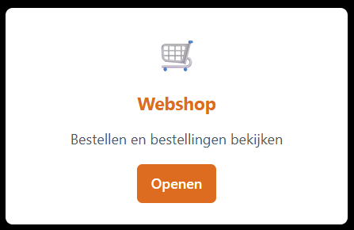
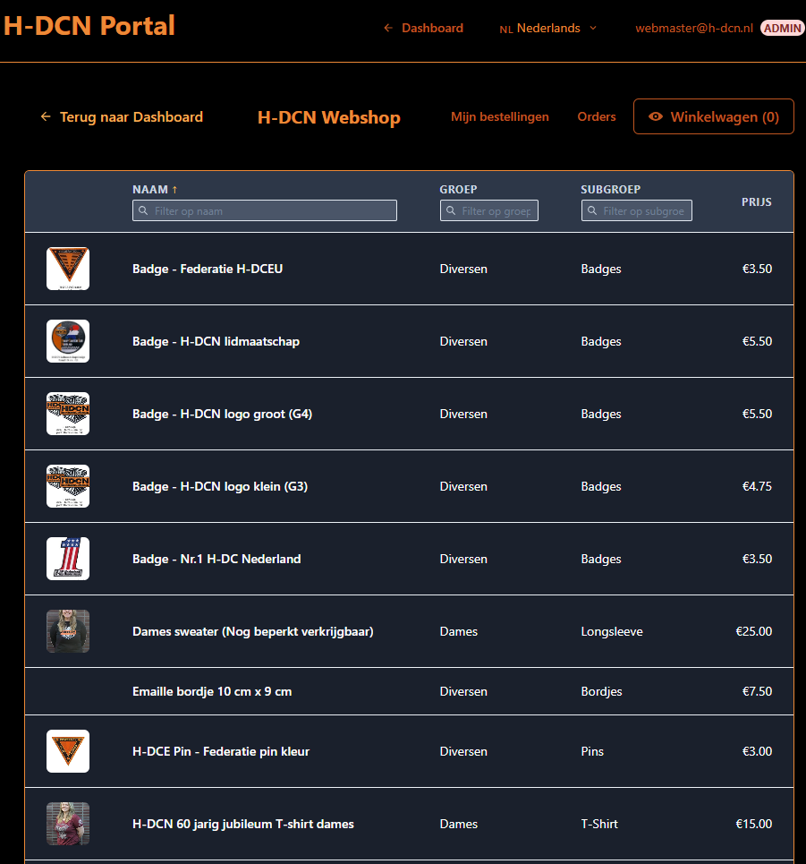
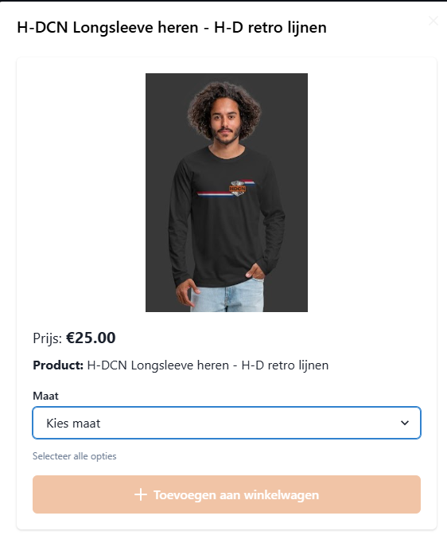
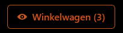
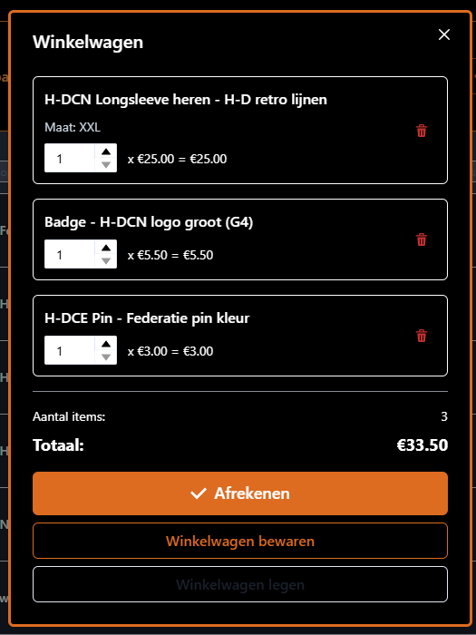
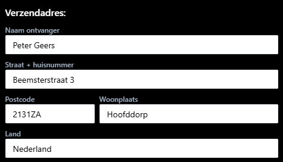
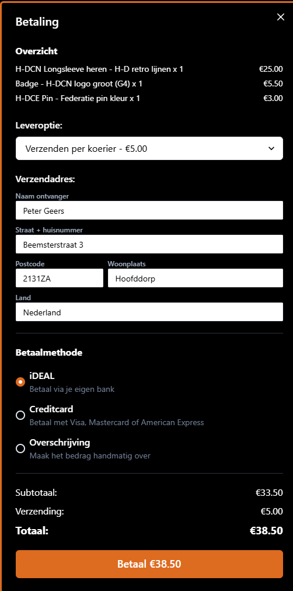
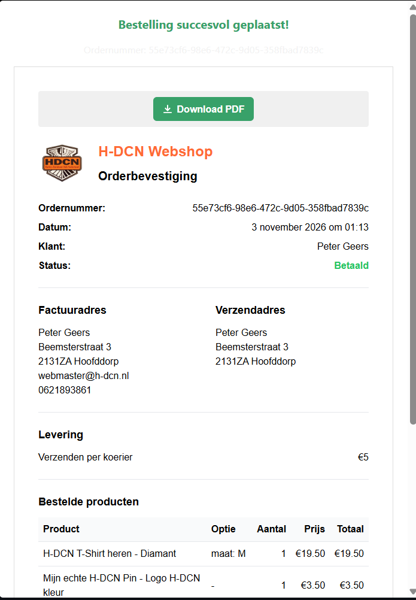

Handleiding Webwinkel — voor leden
Deze handleiding legt stap voor stap uit hoe je als lid van H-DCN bestelt in de webwinkel: van het bekijken van producten tot het afrekenen en het terugvinden van je bestellingen. De handleiding beschrijft de webwinkel zoals die nu werkt.
💡 Tip: Lees de stappen één keer rustig door. De webwinkel werkt op elke
stap met duidelijke knoppen; je kunt niets stukmaken en je bestelling wordt
pas definitief nadat je hebt afgerekend.
1. Toegang en inloggen
De webwinkel is onderdeel van het H-DCN ledenportaal (portal.h-dcn.nl). Je hebt toegang als je bent ingelogd en lid bent van de groep hdcnLeden.
- Log in op het portaal met je gebruikelijke methode (passkey, e-mailcode of Google).
- Open de Webwinkel vanuit het menu.
Zie je in plaats van de producten een melding dat je geen toegang hebt? Dan is je account nog niet (of niet meer) lid van de webwinkel-groep. Neem in dat geval contact op met een beheerder.

2. Door de producten bladeren
Op de startpagina van de webwinkel zie je het productoverzicht: alle producten die op dat moment beschikbaar zijn. Producten die niet actief zijn, verschijnen niet in de lijst.
- Je ziet per product onder andere de naam, de groep/subgroep (zoals Kleding of Accessoires) en de prijs.
- Klik op een product om de productkaart te openen met meer details.

3. De productkaart en een variant kiezen
Als je op een product klikt, opent de productkaart. Hier zie je:
- Een of meer productafbeeldingen (blader met de pijltjes als er meerdere zijn).
- De prijs en de productomschrijving.
- Eventuele varianten om uit te kiezen (bijvoorbeeld maat of kleur).
Een variant kiezen
Heeft een product varianten, dan verschijnt een keuzemenu. Kies bijvoorbeeld eerst de maat en daarna de kleur. Zolang je nog niet alle vereiste keuzes hebt gemaakt, kun je het product nog niet aan je winkelwagen toevoegen.

Aankoopregels
Voor sommige producten gelden aankoopregels, bijvoorbeeld een maximum aantal per lid. Als een regel van toepassing is, zie je daarvan een melding op de productkaart. Kun je het product daardoor niet (verder) bestellen, dan is de knop Toevoegen niet beschikbaar en lees je in de melding waarom.
4. Toevoegen aan de winkelwagen
Heb je de gewenste variant gekozen? Klik dan op Toevoegen om het product in je winkelwagen te leggen. Je kunt daarna verder winkelen en meer producten toevoegen.
Rechtsboven in de webwinkel zie je het winkelwagen-icoon met het aantal items dat je in je winkelwagen hebt.

5. De winkelwagen beheren
Klik op het winkelwagen-icoon om je winkelwagen te openen. Hier zie je alle producten die je hebt toegevoegd, met per regel de gekozen variant, het aantal en de prijs.
In de winkelwagen kun je:
- Aantal aanpassen — gebruik de plus/min-knoppen of typ een nieuw aantal.
- Een product verwijderen — klik op het prullenbak-icoon naast de regel.
- Winkelwagen opslaan — klik op Opslaan om je winkelwagen te bewaren, zodat je later verder kunt zonder je keuzes kwijt te raken.
- Winkelwagen leegmaken — klik op Leegmaken om alle producten te verwijderen.
Onderaan zie je het aantal items en het totaalbedrag.

Deelnemersgegevens (bij sommige producten)
Bij bepaalde producten (bijvoorbeeld deelname-gerelateerde artikelen) wordt om extra deelnemersgegevens gevraagd. Klik in de winkelwagen op Deelnemersgegevens bij de betreffende regel en vul de gevraagde velden in. Bestel je meerdere stuks, dan vul je de gegevens per stuk in.

6. Afrekenen
Klik in de winkelwagen op Afrekenen om je bestelling af te ronden. Is je winkelwagen leeg, dan krijg je een melding en kun je niet verder.
In het afrekenscherm doorloop je het volgende:
Overzicht
Bovenaan zie je een overzicht van je bestelling: elk product met het aantal en de prijs.
Leveroptie
Kies een leveroptie. De beschikbare opties en bijbehorende kosten worden door H-DCN ingesteld. De eventuele verzendkosten worden opgeteld bij je totaal.
Afleveradres
Vul je afleveradres in: naam ontvanger, straat + huisnummer, postcode, woonplaats en land. Deze velden zijn waar mogelijk al voor-ingevuld met je lidgegevens; controleer ze en pas ze aan waar nodig.

Betaalmethode
Kies hoe je wilt betalen:
- iDEAL — je wordt doorgestuurd naar je eigen bank om de betaling te voltooien.
- Creditcard — je wordt doorgestuurd naar een beveiligde betaalpagina.
- Overschrijving — je plaatst de bestelling en maakt het bedrag daarna zelf over. Je krijgt de benodigde gegevens te zien: het IBAN, het bedrag en een kenmerk dat je bij de overschrijving vermeldt.
📷 [Screenshot: keuze van betaalmethode (iDEAL / Creditcard / Overschrijving)] — bestand:
assets/winkel-betaalmethode.png
Bestelling plaatsen / betalen
- Bij iDEAL of Creditcard klik je op de betaalknop (met het totaalbedrag) en word je doorgestuurd om de betaling af te ronden.
- Bij Overschrijving klik je op Bestelling plaatsen; de betaalgegevens verschijnen daarna in beeld.
⚠️ Let op: Controleer voordat je afrekent of alle verplichte velden zijn
ingevuld (zoals eventuele deelnemersgegevens). Ontbreekt er iets, dan krijg je
een melding en kun je nog niet afrekenen.
7. Betaling afronden en terugkeer naar de winkel
Bij iDEAL of Creditcard rond je de betaling af in de omgeving van je bank of de betaalpagina. Daarna word je automatisch teruggestuurd naar de webwinkel.
- Is de betaling gelukt, dan zie je een bevestiging in beeld.
- Is er iets misgegaan, dan krijg je een melding met de mogelijkheid om het opnieuw te proberen.
📷 [Screenshot: terugkeer na betaling met bevestiging] — bestand:
assets/winkel-betaling-terugkeer.png
8. Bestelbevestiging en PDF-download
Na een geslaagde bestelling zie je een bevestigingsscherm met:
- Je bestelnummer (bewaar dit; je kunt ernaar verwijzen bij vragen).
- Een knop om de bevestiging als PDF te downloaden.
Bij Overschrijving zie je in de bevestiging nogmaals de betaalgegevens (IBAN, bedrag en kenmerk) zodat je het bedrag kunt overmaken.

9. Mijn bestellingen
Via Mijn bestellingen in de webwinkel vind je al je eigen bestellingen terug. Per bestelling zie je:
- De status (met een gekleurde statusaanduiding).
- Het bestelnummer en de besteldatum.
- Een knop om de bevestiging als PDF te downloaden.
Track & trace
Is je bestelling verzonden, dan zie je het trackingnummer en de vervoerder zodat je de zending kunt volgen.
Klik op een bestelling om de details te bekijken.
📷 [Screenshot: Mijn bestellingen met status en track & trace] — bestand:
assets/winkel-mijn-bestellingen.png
10. Veelvoorkomende vragen
Ik kan een product niet toevoegen aan mijn winkelwagen. Controleer of je alle vereiste varianten (zoals maat of kleur) hebt gekozen. Mogelijk geldt er ook een aankoopregel (zoals een maximum aantal); de melding op de productkaart legt dit uit.
Mijn winkelwagen is leeg terwijl ik eerder producten had toegevoegd. Gebruik Opslaan in de winkelwagen om je selectie te bewaren. Een niet-bewaarde winkelwagen kan verdwijnen als je uitlogt of lang wegblijft.
De betaling is mislukt. Je kunt het opnieuw proberen via de melding die na de betaling verschijnt. Je bestelling blijft bewaard totdat de betaling is afgerond.
Ik heb voor Overschrijving gekozen — wat nu? Maak het bedrag over met de getoonde gegevens en vermeld daarbij het kenmerk. Je bestelling wordt verwerkt zodra de betaling door H-DCN is ontvangen.
Waar vind ik mijn bestelnummer terug? In de bevestiging direct na het bestellen, en later onder Mijn bestellingen.
📷 [Screenshot: voorbeeld van een foutmelding bij afrekenen] — bestand:
assets/winkel-foutmelding.png
Heb je een vraag die hier niet beantwoord wordt? Neem contact op met een H-DCN-beheerder.